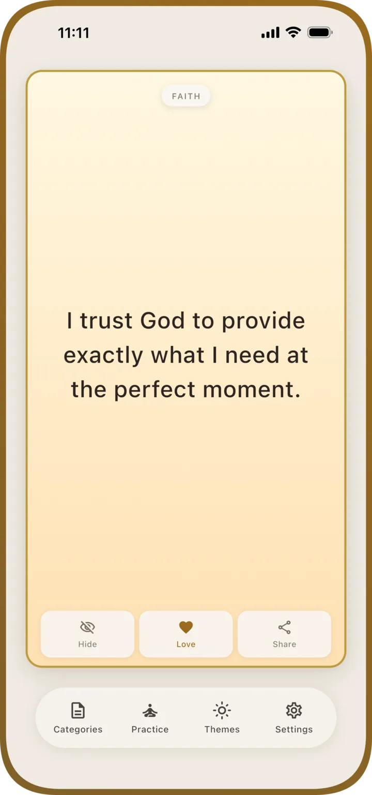
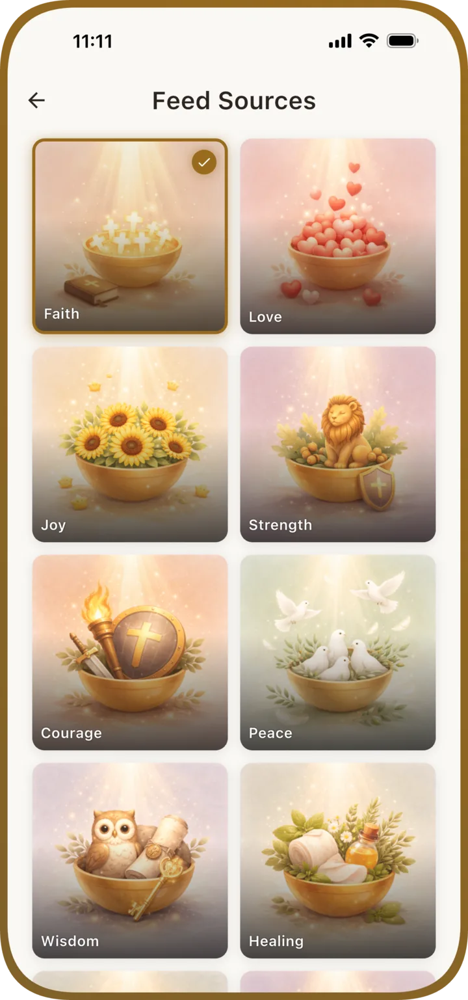
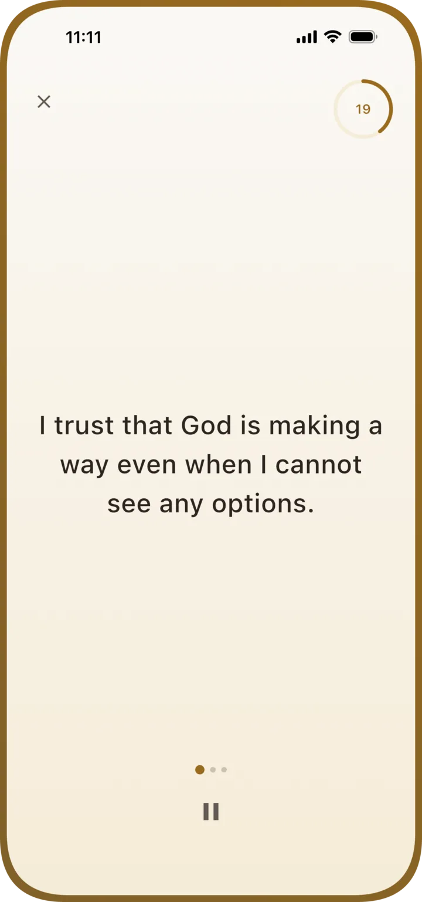
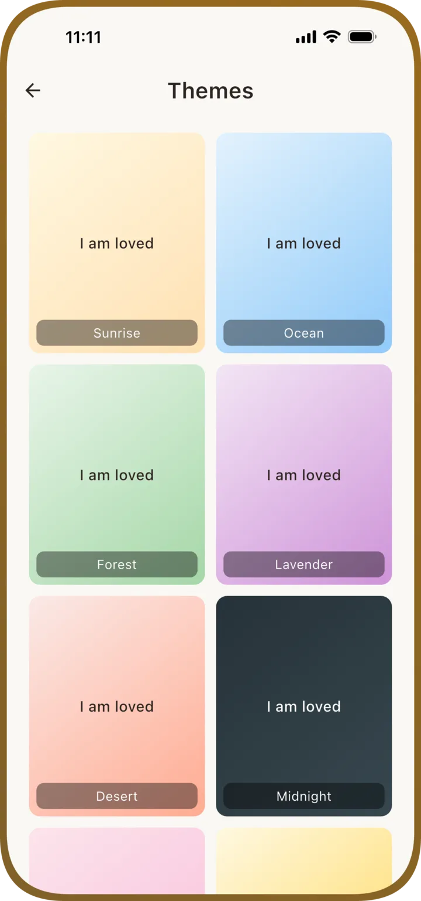

Manna.
Gather Your
Daily Truth.
Scripture-rooted affirmations to renew your mind, strengthen your faith, and transform your mornings.

The Practice
What Are Christian Affirmations?
Christian affirmations are spoken declarations of God's promises and biblical truths. Unlike generic self-help mantras, they draw their power from Scripture — the unchanging Word of the Creator who knows you by name.
"I am fearfully and wonderfully made."
Psalm 139:14"I can do all things through Christ who strengthens me."
Philippians 4:13"God has not given me a spirit of fear, but of power, love, and a sound mind."
2 Timothy 1:7When you speak God's Word over your life, you're not manifesting — you're remembering. You're aligning your heart with truths that were declared over you before you were born.
"Do not conform to the pattern of this world, but be transformed by the renewing of your mind."
Romans 12:2
The App
God's promises, beautifully delivered.
Every detail — from typography to transitions — is crafted to make each affirmation feel like it was written just for you.
Swipe through daily affirmations

20 categories for every season

Guided practice sessions

Handcrafted themes
Features
A daily practice, not another app.
Daily Affirmation Cards
Fresh scripture-based affirmations delivered every day. Swipe, save, and share the ones that speak to your heart.
20 Life Categories
From Faith & Trust to Healing, Purpose, and Victory. Find affirmations that meet you exactly where you are.
Guided Practice Mode
Timed meditation sessions. Sit with each affirmation, let it sink deep, and build a daily habit that transforms.
Beautiful Themes
8 handcrafted themes plus a custom theme creator. Make your practice space feel like home.
Daily Reminders
Gentle, customizable notifications to build a consistent practice. Set times that fit your rhythm.
Custom Affirmations
Write your own from Scripture or your pastor's teaching, and weave them into your daily practice.
Why Manna
Fresh truth every morning.
A practice that transforms.
Rooted in Scripture
Every affirmation draws from God's Word. This isn't self-help — it's declaring what your Creator has already said about you.
Renew Your Mind Daily
Small moments of declaration create lasting transformation. A daily habit that changes how you think, speak, and believe.
Build Unshakable Faith
When you meditate on God's promises, doubt gives way to confidence. Not in yourself — in the One who made you.
Beautiful & Distraction-Free
No ads. No noise. No algorithms. Just a warm, quiet space for you and God's truth.
Your daily manna is waiting.
Gather Your Daily Truth.